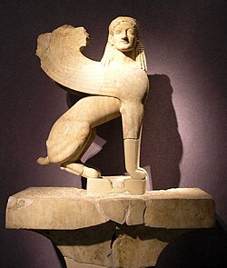
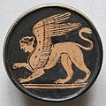

Vol. 1: Mitologia Griega
La Esfinge Griega
En la mitología griega, la Esfinge (latín: Sphinx) era una criatura mítica de destrucción y mala suerte, que era representada con rostro de mujer, cuerpo de león y alas Era descrita como traicionera y despiadada, y capaz de matar y comer a aquellos que no fuesen capaces de responder a su acertijo. Esta versión mortal de una esfinge aparece en el mito y drama de Edipo: El territorio de Tebas. A diferencia de la esfinge griega, representada en forma femenina, la esfinge egipcia simbolizaba el poder divino del faraón y protegía lo sagrado. Los griegos, al observarla, la interpretaron como masculina, llamándola androsfinge.


Como cuenta en la historia de Edipo. En Grecia, estaba aterrorizado por una esfinge, y Hesíodo en su Teogonía nos cuenta que la criatura había nacido de la Quimera (un monstruo de tres cabezas que escupía fuego y el cuerpo era en parte de león, de cabra, de serpiente y de dragón) y era hermana del león de Nemea y hermanastra de Cerbero (el perro de tres cabezas que custodiaba el Hades). La esfinge había creado una sequía y una hambruna y no pensaba dejar en paz a los tebanos hasta que no resolvieran su adivinanza. Cuando la esfinge mató a su hijo Hemón, Creonte, el rey de Tebas se quedó tan desesperado por la situación que le ofreció su reino y a su hija Yocasta a cualquiera que consiguiera resolver la adivinanza. Edipo acepta el desafío y acierta la respuesta (es el hombre), y desesperada por haber sido vencida la esfinge se lanza desde la acrópolis de Tebas y se mata. Las escenas del héroe con la criatura mitológica son las representaciones más comunes del mito de Edipo y aparecen a partir del siglo VI a.C. en la cerámica, en piedras grabadas y como elementos decorativos en las telas.
En la cultura de la antigua Grecia, las primeras esfinges aparecen en la escultura a partir del siglo VII a.C. A partir del siglo VI a.C., la esfinge griega empieza a aparecer en las esculturas de piedra, a veces levantada sobre las patas traseras. Estas esculturas se usaban a modo de ofrendas votivas, normalmente encaramadas encima de altas columnas jónicas o dóricas y se exponían en santuarios como el de Delfos o Olimpia.